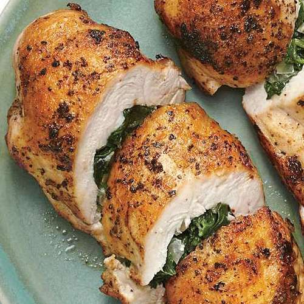
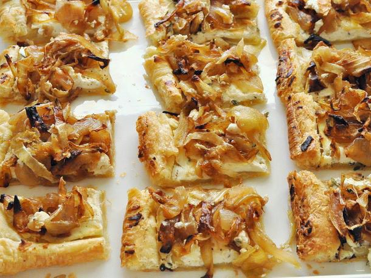
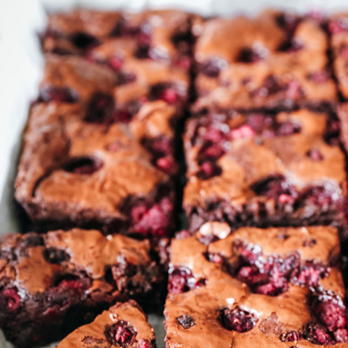

Peter's Delicious Recipes is a delightful collection of culinary creations that are sure to tantalize your taste buds. From simple and scrumptious midday meals to inviting and irresistible dishes. Peter's recipes are a perfect blend of inventiveness and craveable flavors. Whether you're looking for easy party food ideas or delectable treats, Peter's Food Adventures will leave you with a full belly and a happy heart.
Savory Spinach and Feta Stuffed Chicken Breasts
This recipe offers a simple yet flavorful way to prepare stuffed chicken breasts, combining the richness of feta cheese with the freshness of spinach to create a satisfying main course.
Time: 30 minutes
Caramelized Onion and Goat Cheese Tartlets
This recipe yields delightful Caramelized Onion and Goat Cheese Tartlets, featuring the sweet, savory flavors of caramelized onions paired with creamy goat cheese on a crispy puff pastry base.
Time: 1 hour and 30 minutes
Spicy Mango and Black Bean Quinoa Salad
This Spicy Mango and Black Bean Quinoa Salad is a vibrant and satisfying dish that combines the sweetness of mango with the earthy flavor of black beans and the nuttiness of quinoa. The chipotle-lime dressing adds a zesty and spicy kick to the salad, making it a perfect side dish or light meal.
Time: 20 minutes

Decadent Dark Chocolate Raspberry Brownies
These Decadent Dark Chocolate Raspberry Brownies are a delightful combination of rich, fudgy chocolate and bursts of sweet, tart raspberries, making them a perfect indulgence for any occasion.
Time: 1 hour
